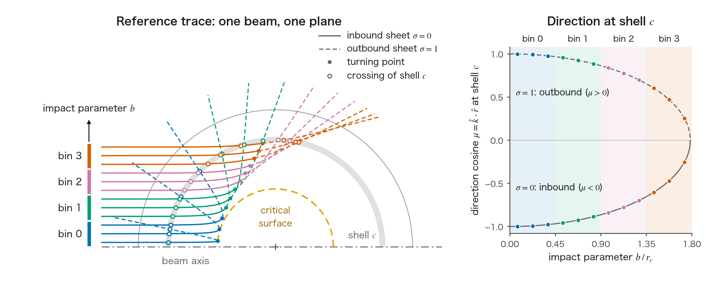
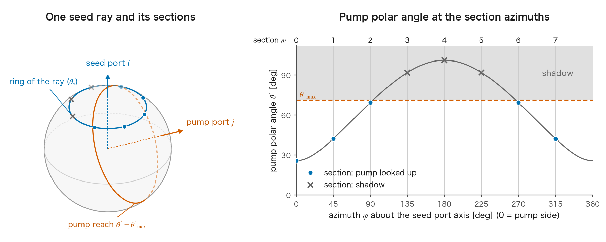
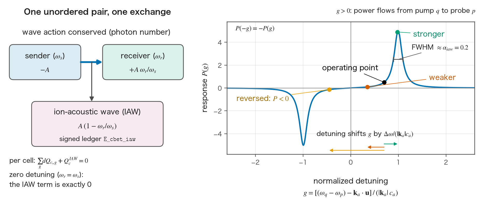

Cross-beam energy transfer (CBET) reference
TENRYU's cross-beam energy transfer (CBET) redistributes light power between crossing laser beams through the ion-acoustic waves (IAW) they drive. The 1D spherical port_section mode traces the refracted path of one representative beam once and rigidly rotates the result onto the directions of the physical ports (a port is the opening and direction through which a beam of the facility enters the target). Each ray record is copied into azimuthal sections about the beam axis, and each copy receives a local gain from the field (intensity and direction) that the rays of the other ports produce at its own position. This is the idea of the section ray tracing of Follett et al. [2]. Near a caustic, the intensity obtained from the rays is bounded by a field limiter, and the light-power balance, which this scheme does not keep exactly, is closed by a caustic pump multiplier applied to the contributions near the caustic [6]. The spherically symmetric hydrodynamics is kept while the physical port layout, crossing angles, polarization average, wavelength detuning, and pump depletion are represented. CBET is stimulated Brillouin scattering (SBS) in the strongly damped limit: the beat of two crossing beams drives an ion-acoustic wave through the ponderomotive force, and the Doppler-shifted resonance sets the magnitude and direction of the transfer. Terms specific to this calculation are explained in the terms section, and the verification against analytic solutions is explained on the child page CBET verification against analytic solutions.
Physical mechanism
Two electromagnetic waves \((\omega_p,\mathbf{k}_p)\) and \((\omega_q,\mathbf{k}_q)\) that cross in the same plasma volume produce a beat. Its ponderomotive force oscillates at the difference frequency \(\Delta\omega=\omega_q-\omega_p\) and the beat wavevector \(\mathbf{k}_a=\mathbf{k}_q-\mathbf{k}_p\). This force drives an ion-density perturbation, an ion-acoustic wave. A periodic density modulation is also a refractive-index modulation, so the wave acts as a moving diffraction grating, and each beam is Bragg-scattered by it. The scattered wave matches the direction and phase of the partner beam, so the resonantly driven grating transfers energy coherently from one beam to the other. This is the three-wave coupling of SBS; it differs from ordinary SBS only in that the scattering seed is the partner beam instead of noise.
In a plasma flowing at velocity \(\mathbf{u}\), the beat seen by the ions is Doppler shifted, and the eigenresponse occurs at \(\Delta\omega-\mathbf{k}_a\cdot\mathbf{u}=\pm|\mathbf{k}_a|c_a\). The normalized detuning \(g\), defined below, is this condition made dimensionless; \(|g|=1\) is the resonance. Two consequences matter in direct drive. First, beams of the same wavelength (\(\Delta\omega=0\)) still exchange strongly where the projected flow reaches the sound speed, \(\mathbf{k}_a\cdot\mathbf{u}=\mp|\mathbf{k}_a|c_a\), that is, at the Mach-1 surface of the expanding corona. Second, a deliberate wavelength detuning \(\Delta\lambda\) moves the operating point along the response curve. The latter is the control used to mitigate CBET (Figure D).
The ion-acoustic response function \(P(g)\) (defined in the next section) is odd in \(g\), so the sign of \(g\) sets the direction of the transfer. When \(g_{pq}>0\), power flows from pump \(q\) to probe \(p\): the beam that is blue-shifted in the plasma frame pumps the red-shifted one. In the photon picture the exchange conserves wave action (photon number). A scattered photon keeps its count while its frequency drops from \(\omega_s\) to \(\omega_r\), and the Manley–Rowe deficit \(1-\omega_r/\omega_s\) per unit power goes into the ion-acoustic wave. The legacy reduction books this deficit in a signed IAW ledger, and port_section does not (wave-action section below).
TENRYU evaluates the linear, steady-state, strongly damped local-plane-wave limit of Marozas et al. [1], the form used by DRACO, the 2D hydrodynamics code of LLE (Laboratory for Laser Energetics, University of Rochester). The ion-acoustic wave is assumed slaved to the local drive: it neither propagates between cells nor stores energy. This assumption allows a local gain coefficient for each crossing. The dimensionless damping rate \(\alpha_{iaw}=\nu_a/(|\mathbf{k}_a|c_a)\) (default 0.2, calibrated against the lineage of LILAC, the 1D hydrodynamics code of LLE) sets the width of the resonance. port_section includes the intensity limit near caustics and the pump multiplier (Follett et al. [6]). It does not treat the ion-acoustic heating corrections of order \(|\Delta\omega|/\omega_0\), the frequency shift of light by the time variation of the plasma (Dewandre shift), speckle statistics, polarization dynamics, broadband illumination, or a kinetic \(\nu_a(k)\).
Ion-acoustic gain model
When probe \(p\) and pump \(q\) cross the same plasma cell, TENRYU evaluates the dimensionless gain \(d\tau_{pq}\). The probe intensity grows as \(dI_p=d\tau_{pq}\,I_p\): \(d\tau_{pq}\) is the logarithmic gain \(d\ln I_p\), and in the linear (strongly damped, steady-state) model it is proportional to the pump intensity \(I_q\) and the path length \(ds\). The transferred power \(d\tau_{pq}\,I_p\) is proportional to both beam intensities; this bilinearity corresponds to the product \(L_{g,c}L_{q,c}\) in the exchange formula below. With the roles swapped, \(d\tau_{qp}\) is proportional to \(I_p\). Temperatures are converted from eV to erg and the expression is evaluated in Gaussian cgs.
$$ d\tau_{pq}=\eta_{pol}\frac{\lambda_0 e^2}{c^3m_e} \frac{\hat n_e}{1-\hat n_e} \frac{\langle Z\rangle}{\langle Z\rangle T_e+3T_i} P(g_{pq})I_q\,ds, \qquad \eta_{pol}=\frac{f_{cbet}}{4}(1+\cos^2\psi). $$ $$ g_{pq}=\frac{(\omega_q-\omega_p)-\mathbf{k}_a\!\cdot\!\mathbf{u}} {|\mathbf{k}_a|c_a},\qquad P(g)=\frac{g\alpha_{iaw}}{(g\alpha_{iaw})^2+(1-g^2)^2}, \qquad \mathbf{k}_a=\mathbf{k}_q-\mathbf{k}_p. $$- \(\eta_{pol}=\tfrac{f_{cbet}}{4}[1+(\hat k_q\cdot\hat k_p)^2]\) — the polarization average for unpolarized/smoothed beams crossing at angle \(\psi\) (\(\cos\psi=\hat k_q\cdot\hat k_p\));
f_cbetabsorbs experimental calibration (DRACO uses 1.5; TENRYU default 1.0). - \(\lambda_0 e^2/(c^3 m_e)\) — the SBS coupling constant; the explicit \(\lambda_0\) expresses the familiar fact that longer-wavelength light suffers stronger CBET.
- \(\hat n_e/(1-\hat n_e)\) — density coupling \(\propto\hat n_e\) times the EM dielectric enhancement \(1/(1-\hat n_e)\) as the pair approaches critical density.
- \(\langle Z\rangle/(\langle Z\rangle T_e+3T_i)\) — since \(\langle Z\rangle T_e+3T_i=\bar m_i c_a^2\), this is the inverse acoustic stiffness: a hotter (faster-sound) plasma is harder to compress and responds less.
- \(P(g)\) — the absorptive part of the driven ion-acoustic oscillator with damping \(\alpha_{iaw}\): peaked near \(|g|\simeq 1\), FWHM \(\simeq\alpha_{iaw}\) in \(g\), and odd in \(g\).
- \(I_q\,ds\) — gain is linear in pump intensity and path length; pump depletion enters only because the powers of the field-producing states change in the solve below, keeping each evaluation linear.
Everything is evaluated in Gaussian cgs with temperatures in erg (converted from eV); \(n_{crit}=m_e\omega_0^2/(4\pi e^2)\) gives \(9.06\times10^{21}\,\mathrm{cm^{-3}}\) at 351 nm and \(4.02\times10^{21}\,\mathrm{cm^{-3}}\) at 527 nm; the electron constants are shared with the laser package. The \(\hat n_e=n_e/n_{crit}\) in the gain formula is the electron density normalized to this critical density. \(c_a=[(\langle Z\rangle T_e+3T_i)/\bar m_i]^{1/2}\) with \(\bar m_i=A_{eff}m_p\); in 1T runs \(T_i=T_e\).
Terms used in this calculation
A 1D fluid carries only radial profiles, but the CBET gain depends strongly on the angle \(\psi\) at which the light of two beams crosses in a cell and on the beat wavenumber \(|\mathbf{k}_a|\) (gain model). TENRYU keeps this directional information by dividing the ray paths into the units below. These terms carry meanings specific to ray-based CBET calculations, and to TENRYU's implementation in particular, so they are defined here together.
Port, reference trace, and crossing
A port is an opening through which a beam of the laser facility enters the target chamber, together with its direction. The port table in Laser.port_configuration gives each port's direction, power weight, wavelength offset \(\Delta\lambda\), and related data. Studio's presets expand GXII to 12 ports, OMEGA to 60, and NIF to 192.
The reference trace is the set of rays of one representative beam traced in a single plane that contains the target center and the beam axis (Figure A, left). In a spherically symmetric plasma, rays with the same impact parameter (next subsection) coincide under rotations about the target center, so rotating this one trace onto each port's direction gives the ray paths of every port. Follett et al. [2] call such a set of rays with varying impact parameter a sector. Each ray of the reference trace stands for one ring about the beam axis (one annulus of the aperture).
A crossing, on this page, is one passage of one ray through one cell (a spherical shell in 1D), together with the record stored for that passage (its contents are listed in step 1). It does not mean two beams crossing each other: the overlap of two beams' light is represented by crossings of different states (defined below) that coexist in the same cell. A ray that turns passes each shell outside its turning point twice, once on the inbound side and once on the outbound side.
port_section is the CBET geometry treatment that uses the real port layout and the idea of the section ray tracing of Follett et al. [2]: it rotates the reference trace onto every port and evaluates the gain that the rays of each state receive from the fields of the other states. The default geometry_mode="legacy" (the legacy reduction below) does not use the port layout; it averages over the azimuth between two rays (next section). Studio writes only port_section.
Impact parameter and impact-parameter bin
The impact parameter is the distance between the target center and the ray's line when the ray is taken as a straight line without refraction. For a ray entering from vacuum it equals the Bouguer invariant \(B=n_{\rm refr}r\sin\alpha\), which is conserved along the path (\(\alpha\) is the angle between the ray and the radial direction; see Laser). For a given plasma profile, the impact parameter alone therefore fixes the radius at which the ray turns and the angle at which it crosses each shell: rays with a small impact parameter penetrate deep in a nearly radial direction, and rays with a large one turn farther out.
A 1D beam divides its aperture, on the launch plane (the plane perpendicular to the beam axis from which the rays are launched), into concentric annuli and launches one ray per annulus \(k=0,1,\dots,N_{ray}-1\) from the point at the annulus-center radius \(R_k=(k+1/2)\Delta R\) (the launch radius), along the straight line through the focus on the beam axis (\(N_{ray}\) is Laser.rays_per_beam; \(\Delta R\) is the aperture radius divided by \(N_{ray}\); see the terms section of Laser). The rays of the reference trace are the rays of the 1D laser trace. The impact parameter of a ray, the distance between its line and the target center, is \(b_k=|z_f|R_k/\sqrt{R_k^2+(Z_{init}-z_f)^2}\), which in general is not equal to the launch radius \(R_k\) (\(z_f\) is the position of the focus and \(Z_{init}\) the position of the launch plane; see Laser).
When the focus is not at the target center (\(z_f\neq0\)), \(b_k\) increases monotonically with \(k\), so the order of the ray index \(k\) is the order of impact parameter. When the focus is at the target center (\(z_f=0\)), every ray passes through the center, so \(b_k=0\) for all annuli, and the order of \(k\) is only the order of the launch radius (the order of the angle to the beam axis), not of the impact parameter. The port-section reconstruction uses the launch radius \(R_k\), not \(b_k\), as the distance of the ray from the beam axis, and computes node polar angles from the launch angle and the increments integrated during tracing.
The impact-parameter bins divide the beam's rays, in the order of the ray index \(k\), into \(N_{bin}\) (Laser.cbet.n_impact_bins) groups of equal ray count: ray \(k\) belongs to bin \(a=\lfloor kN_{bin}/N_{ray}\rfloor\), so the bin depends only on \(k\). Bin 0 holds the rays near the beam axis and bin \(N_{bin}-1\) the rays at the edge of the aperture; when \(N_{bin}\) divides \(N_{ray}\), each bin is a band of equal width across the aperture (Figure A, left).
Rays are grouped by impact parameter for two reasons. First, the CBET coupling depends on the angle at which the light of two beams crosses, and rays that cross the same shell point in different directions when their impact parameters differ; lumping a beam's light into one quantity per cell would lose this spread. Rays of the same bin cross each shell in nearly the same direction (Figure A, right), so binning keeps the beam's directional spread at a resolution of \(N_{bin}\) steps. Second, in 1D an exchange-rate coefficient is computed per cell and state (defined below), and power is updated exponentially along each ray record (step 4). Rays belonging to the same state share this coefficient. More bins raise the resolution but increase the number of states and couplings (tally groups and states). Studio's default is 4; a deck that does not set the key gets 16.

Sheet
A sheet is the part of a beam's ray family through which at most one ray passes each point in space. Seen in the space of ray positions and wavevectors \((\mathbf{x},\mathbf{k})\) (phase space), a beam's rays form one surface; a part of that surface that projects one-to-one onto position space is one sheet (Follett et al. [2]). The field a beam produces at a point is the sum of the contributions of its sheets, so CBET treats sheets as separate partners.
In a smooth, monotonic, spherically symmetric density profile, a beam splits into two sheets: the sheet of rays going in and the sheet of rays coming out after they turn. Inbound and outbound rays pass the same point in different directions (Figure A). TENRYU splits each ray path at its turning point (the point of minimum radius) and calls the inbound part sheet \(\sigma=0\) and the outbound part sheet \(\sigma=1\). The two sheets meet at the caustic, the surface where neighboring rays cross and the ray-bundle area vanishes, and the intensity derived from rays diverges there. A widely used treatment, called the field limiter, bounds this divergence by a cap matched to the maximum of the analytic solution for a linear density gradient (an Airy function) [6]. LILAC and TENRYU both use it (port-section section). The rays of one port receive no gain from the field of the same sheet of the same port; this removes the coupling of a ray with itself.
Tally groups and states
A tally group is the unit in which the crossings of rays are tallied per cell: a combination of beam \(b\), sheet \(\sigma\), and impact-parameter bin \(a\) (used by the legacy reduction; docs/NUMERICS.md §5.10.2 in the repository calls it an angle group). The crossings of one tally group are reduced per cell to one power line integral \(L_{g,c}\) and one power-weighted direction cosine \(\bar\mu_{g,c}\) (next section).
A state is the tally unit of port_section: the combination \(g=(i,\sigma,\beta,m)\) of port \(i\), sheet \(\sigma\), impact-parameter bin \(\beta\), and section \(m\) (next term). The reference trace holds the records of only one representative beam, so the states are made by copying those records with each port's power weight and then into each section. There are \(G=N_s\times N_{port}\times2\times N_{bin}\) states, where \(N_s\) is the number of sections and \(N_{port}\) the number of ports. Each state receives gain from the field produced by each of the other states \(q\) in the same cell. This coupling is held per cell for each combination of the receiving state \(g\) and the field-producing state \(q\), and only nonzero combinations are stored; they are not merged into unordered pairs. The port-count range is [1, 192]. For example, GXII (12 ports) with Studio's defaults \(N_{bin}=4\) and \(N_s=8\) has \(G=768\).
Sections, seed and pump, and shadow
A section is one of the equally spaced azimuths \(\varphi_m=2\pi m/N_s\) (\(m=0,1,\dots,N_s-1\)) obtained by dividing the azimuth \([0,2\pi)\) about a port's axis into Laser.cbet.n_section_phi (\(N_s\)) parts. The crossings of the reference trace are computed in one plane, but the beam is axisymmetric about its own axis, so one crossing record stands for every point of a ring about that axis. The pump arrives from another direction, so its intensity and direction vary around this ring. Each ray record is therefore split into \(N_s\) copies rotated by \(\varphi_m\) about the axis, each carrying \(1/N_s\) of the ray's power (Figure B). Where the ray's polar angle passes \(\pi\) and the path wraps into the half-plane on the other side of the beam axis in the plane of the reference trace, \(\pi\) is added to the azimuth. The copies are part of the state and carry their own power histories: a copy strongly depleted at one azimuth and the copies at other azimuths propagate separately. The section ray tracing of Follett et al. [2] copies the set of rays at different azimuths about the beam axis to account for azimuthal differences (Sec. III F of Ref. [2]).
The seed is the state that receives the gain. A seed record has sample points (position and direction) in a cell.
The pump is the state that produces the field at that sample point. The pump's intensity and direction are interpolated linearly from the pump's reference-trace table (crossings ordered by shell, sheet, and polar angle) at the polar angle \(\theta'\) of the sample point in the pump port's frame. The table contains the crossings of all rays of the sheet (all bins), and the interpolated field is attributed to the states of the bins of the two rays that bracket the sample point. The azimuth of the sample point about the pump port's axis lies between two neighboring pump sections, and the field is split between the states of those two sections with linear weights in azimuth. These roles are computational: the sign of \(g\) decides which way power flows (physical mechanism).
The shadow is where the rays of the pump's sheet do not reach. When the polar angle \(\theta'\) of a sample point exceeds the largest polar angle \(\theta'_{\max}\) that the pump's reference-trace rays reach in the same shell and sheet, no pump light arrives at that point (the shadow region behind the caustic, in the words of Follett et al. [2]). A sample point in the shadow receives no gain from that pump.

n_section_phi = 8). Left: the ring that one seed crossing record stands for (ray \(k=7\), at polar angle \(\theta_s\) from the seed port's axis) and its eight section copies on it (azimuths \(\varphi_m=2\pi m/8\); the figure puts the azimuth origin on the pump side). The pump port is placed 63.4° from the seed port (the angle between neighboring vertices of an icosahedron). The vermilion circle joins the points at polar angle \(\theta'_{\max}\) from the pump axis; beyond it the rays of the pump's inbound sheet do not reach. Right: the pump polar angle \(\theta'\) at each section copy. Sections beyond \(\theta'_{\max}\) (crosses) are in the shadow and receive no gain from this pump.The 1D spherical reduction: tally groups and azimuthal quadrature
The legacy reduction groups the crossings of traced rays by tally group (beam \(b\), sheet \(\sigma\), and impact-parameter bin \(a\); see terms). The sheet is decided by the direction of the segment, \(\sigma=\mathbb{1}[\mu_{seg}>0]\) (1 on the outbound side), giving tally-group index \(g=b\,(2N_{bin})+\sigma N_{bin}+a\) — a bookkeeping index unrelated to the normalized detuning \(g\) of the gain model above. The segment direction cosine is the exact path average \(\mu_{seg}=(r_{stop}-r_{old})/\Delta s\) on the refracted trajectory. In cell \(c\), the per-cell tallies are the power line integral \(L_{g,c}=\sum P\Delta s\), intensity \(I_{g,c}=L_{g,c}/V_c\), and power-weighted direction cosine \(\bar\mu_{g,c}=\sum P\Delta s\mu/L_{g,c}\), with \(V_c\) the Lagrangian cell volume at the trace snapshot.
$$ \cos\psi(\varphi)=\bar\mu_p\bar\mu_q+s_ps_q\cos\varphi,\quad s=\sqrt{1-\bar\mu^2},\qquad |\mathbf{k}_a|(\varphi)=\bar k\sqrt{2(1-\cos\psi)},\quad \bar k=n_r\omega_0/c, $$ $$ \mathbf{k}_a\cdot\mathbf{u}=\bar k\,u_r(\bar\mu_q-\bar\mu_p)\ \ (\varphi\text{-independent}),\qquad \langle P\cdot pol\rangle_\varphi=\frac{1}{N_\varphi}\sum_k\frac{1+\cos^2\psi(\varphi_k)}{4}\,\overline{P(g(\varphi_k))}_r. $$Here \(\varphi\) is the relative azimuth of the two ray planes, \(p,q\) are the paired tally groups, \(\bar\mu_p,\bar\mu_q\) are power-weighted radial direction cosines, \(s_p,s_q\) their corresponding sines; the unsubscripted \(s\) and \(\bar\mu\) express the same relation. \(\psi\) is the crossing angle. \(\mathbf{k}_a\) is the beat wavevector, \(\bar k\) the local optical wavenumber, \(n_r\) the refractive index, \(\omega_0\) the laser angular frequency, \(c\) the speed of light, \(\mathbf{u}\) the flow velocity, and \(u_r\) its radial component. \(\langle P\cdot pol\rangle_\varphi\) is the azimuthal midpoint average of response times polarization factor, \(N_\varphi\) the number of midpoints, \(k\) their index, \(\varphi_k\) the midpoint azimuth, \(g\) the normalized detuning, and \(P\) the response function. The overbar with subscript r denotes a uniform average in radius \(r\) within the cell.
A 1D fluid does not resolve the relative azimuth \(\varphi\) between two ray planes, so the pair kinematics are averaged by midpoint quadrature over \(\varphi\) — averaging \(P(g)\), never the nonlinear substitute \(P(\langle g\rangle)\). The radial flow enters through \(\mathbf{k}_a\cdot\mathbf{u}=\bar k u_r(\bar\mu_q-\bar\mu_p)\), which is exact and \(\varphi\)-independent. The resonance FWHM is \(\simeq\alpha_{iaw}\), and the midpoint quadrature resolves it when \(\max_k|g(\varphi_{k+1})-g(\varphi_k)|\lesssim\alpha_{iaw}/4\); configurations with much smaller alpha_iaw need a larger n_phi (the number of azimuthal midpoints).
Cells at or above ne_frac_cutoff (default 0.95), void cells (the void cells outside the target; see void materials), and cells with any non-finite state (\(\rho,\bar Z,A_{eff},T_e,T_i,u_r,V_c\)) are excluded. For resonance evaluation, the radial velocity \(u_r\) varies linearly in radius between the velocities at the two cell faces. At each azimuthal quadrature node the response \(P(g)\) is averaged uniformly in radius. This is neither a volume average nor an exact ray average. This average requires \(0<\alpha_{iaw}<2\); an enabled 1D CBET deck that violates this condition is a configuration error. A node with \(|\mathbf{k}_a|/\bar k<\)k_a_floor has no beat wave and contributes zero. The gain prefactor and \(\bar k\) bound \(1-\hat n\) from below by the same absorption.eps_n as IB, and config validation enforces ne_frac_cutoff \(\le 1-\)eps_n so the floor can never silently saturate gain inside the active band. port_section does not use that unresolved average; it replaces it with the rotation of the reference trace onto each port and the copies into sections (terms).
Port-section reconstruction from one trace
The reference trace (Figure C) retains radius, direction cosine \(\mu\), path length \(ds\), sheet, and impact bin at each cell crossing. Node radii are the true endpoint radii of the traced path pieces. Polar angle is the launch angle plus the increments integrated during tracing, added in path order. The sum includes preceding path pieces outside the grid, and the angle change of a pass through the center belongs to the inbound piece that ends at the center. From this table the intensity of the pump field is obtained from the cross-section of the ray bundle (Follett et al. [2]).
$$ I(r,\theta)=\frac{p(R)}{2\pi r^2\,|\sin\theta|\,|\mu\,\partial\theta/\partial R|}. $$Here \(r\) is the radius, \(\theta\) the polar angle from the port axis, \(R\) the ray's distance from the beam axis on the launch plane (the launch radius; the \(R_k\) of the terms taken as a continuous variable), \(p(R)\) the beam power per unit width in \(R\), \(\mu\) the direction cosine, and \(\partial\theta/\partial R\) the derivative obtained from the polar-angle differences of neighboring rays. The denominator \(2\pi r^2|\sin\theta|\,|\mu\,\partial\theta/\partial R|\,dR\) is the area in which a ring of rays of width \(dR\) crosses the sphere of radius \(r\), projected onto the plane normal to the rays. At a caustic \(\partial\theta/\partial R=0\) and the intensity diverges, so it is bounded by the field limiter of Eq. (11) of Follett et al. [6]. The limit is set by the scale length of the normalized density at the turning point, \(L=1/|d\hat n_e/dr|\), through \(\zeta=0.9(\omega_0 L/c)^{1/3}\). At a caustic in an interval with zero density gradient, a cap value computed for that caustic is used instead of \(\zeta\).

A state (terms) is \(g=(i,\sigma,\beta,m)\): port, sheet, impact-parameter bin, and section. The single reference record is replicated with each port's power weight, split into the sections with \(1/N_s\) each, and tallied and propagated in canonical port-ID order (ascending port_id of the port table). The seed's sample points are placed as follows. The path piece in a cell is cut at the breaks of the density table and at the density of ne_frac_cutoff, and then into a number of sub-intervals equal to four times its length relative to the cell width, rounded up. No sample points are placed in the part where \(n_e/n_{crit}\) is at or above ne_frac_cutoff. Each sub-interval \([r_1,r_2]\) (width \(h=r_2-r_1\), midpoint \(\bar r\)) holds two sample points at the nodes \(r=\bar r\mp h/(2\sqrt3)\) of the two-point Gauss–Legendre quadrature in radius. These two points are shared by all rays that pass through the sub-interval. When a ray's path turns or ends at a radius \(r_t\) inside a sub-interval (\(r_1<r_t<r_2\)), that ray alone places its own sample points at the two nodes of \([r_t,r_2]\), in place of the shared ones. When \(r_t\) coincides with a sub-interval end, the shared points of the sub-interval that starts at \(r_t\) serve. The weight of sample point \(x\) of ray \(k\) is
so that the two sample points carry half of the sub-interval's weight each. Here \(P_k/N_s\) is the power of the copy at that point and \(J_k\) the integral of the density factor along the path of ray \(k\) in the sub-interval. The density factor \(\hat n_e/(1-\hat n_e)\) of the gain (contained in \(\chi_{pref}\) below) is split into \(\hat n_e/\sqrt{1-\hat n_e}\) and \(1/\sqrt{1-\hat n_e}\): the former is integrated along the path in closed form to give \(J_k\), and the latter is evaluated at the sample points together with the other quantities (pump intensity, response, and temperature factor). The split and the closed forms follow Appendix F of Follett et al. [2] (LILAC). Within the sub-interval the density is represented as \(\hat n_e(r)\approx\eta_1/r^2+\eta_0\), with the coefficients \(\eta_1,\eta_0\) fixed so that it equals the linear profile of the density table at both ends of the sub-interval (on the sub-interval that contains the center, \(r_1=0\), \(\eta_1=0\) and \(\eta_0\) is the density at \(r_2\)). The Bouguer invariant \(B_k=\sqrt{1-\hat n_e}\,r\sin\alpha\) (the \(B\) of the terms; \(\alpha\) is the angle between the radial direction and the ray; for a ray entering from vacuum it equals the impact parameter \(b_k\)) is constant along the ray, so the path-length element is \(ds=r\sqrt{1-\hat n_e}\,dr/\sqrt{Q}\) with \(Q(r)=r^2(1-\hat n_e(r))-B_k^2\), and
$$ J_k=\int\frac{\hat n_e}{\sqrt{1-\hat n_e}}\,ds=\int_{r_1}^{r_2}\frac{\hat n_e(r)\,r\,dr}{\sqrt{Q(r)}}=\eta_1I_{-1}+\eta_0I_1, $$ $$ I_1=\int_{r_1}^{r_2}\frac{r\,dr}{\sqrt Q}=\frac{r_2^2-r_1^2}{\sqrt{Q_1}+\sqrt{Q_2}}, $$ $$ I_{-1}=\int_{r_1}^{r_2}\frac{dr}{r\sqrt Q}= \begin{cases} \dfrac{1}{\sqrt\Gamma}\Bigl[\arctan\dfrac{\sqrt{Q_2}}{\sqrt\Gamma}-\arctan\dfrac{\sqrt{Q_1}}{\sqrt\Gamma}\Bigr] & (\Gamma>0)\\[2ex] \dfrac{1}{\sqrt{-\Gamma}}\ln\dfrac{r_2\bigl(\sqrt{-\Gamma}+\sqrt{Q_1}\bigr)}{r_1\bigl(\sqrt{-\Gamma}+\sqrt{Q_2}\bigr)} & (\Gamma<0) \end{cases} $$Here \(Q_1=Q(r_1)\), \(Q_2=Q(r_2)\), and \(\Gamma=\eta_1+B_k^2\); with the density \(\eta_1/r^2+\eta_0\), \(Q=(1-\eta_0)r^2-\Gamma\). \(\Gamma=0\) is the limit of both expressions. In a sub-interval with \(\eta_1=0\) (such as the one containing the center), \(I_{-1}\) is not evaluated and \(J_k=\eta_0I_1\); for a ray through the center (\(B_k=0\)), \(I_{-1}\) diverges in the sub-interval containing the center while \(J_k\) is finite. To avoid cancellation, the implementation evaluates an equivalent form that combines the difference of the two arctangents (for \(\Gamma<0\), the logarithm) into one arctangent (inverse hyperbolic tangent). For a turning ray \(B_k^2=r_t^2(1-\hat n_e(r_t))\), so that \(Q(r_t)=0\). For the other rays \(B_k\) is the value the reference trace obtained for that ray. In a uniform density (\(\eta_1=0\)) \(J_k\) is the chord length times \(\hat n_e/\sqrt{1-\hat n_e}\). The factor \(1/\sqrt Q\) of the integrand, which diverges at the turning point, is integrated exactly within the closed form. The approximation has two errors. One is the error of the density shape: \(\eta_1/r^2+\eta_0\) differs from the linear profile within the sub-interval by at most \((3/8)|d\hat n_e/dr|\,h^2/r_1\) (\(d\hat n_e/dr\) is the slope of the linear profile; for \(h\ll r_1\)). The other is the error of averaging the quantities evaluated at the sample points with two equal weights: it is proportional to \(h^2\) in a sub-interval where those quantities vary smoothly in radius, and can be proportional to \(h\) in the sub-interval that holds the turning point (there the quantities vary smoothly in path length, not in radius).
At each sample point the seed direction \(\hat d_s\) is rotated into the pump port's frame (Eq. (21) of Ref. [2]), and the pump direction \(\hat d_q\) and intensity \(I_q\) are taken from the pump table. The gain rate at that point (logarithmic gain per unit path) is
$$ \kappa=\chi_{pref}\,I_q\,\frac{f_{cbet}}{4}\bigl[1+(\hat d_s\cdot\hat d_q)^2\bigr]\,\overline{P(g)}_r,\qquad g=\frac{\Delta\omega-\bar k\,u_r(\mu_q-\mu_s)}{|\mathbf{k}_a|c_a},\qquad |\mathbf{k}_a|=\bar k\,|\hat d_q-\hat d_s|. $$Here \(\chi_{pref}\) is the gain prefactor fixed by the cell state alone (the coupling constant \(\lambda_0 e^2/(c^3 m_e)\) of the gain model, the density factor \(\hat n_e/(1-\hat n_e)\), and the temperature factor), \(f_{cbet}\) the calibration factor, \(\Delta\omega=\omega_q-\omega_s\) the difference of the angular frequencies of the pump and seed ports, \(\bar k\) the local light wavenumber, \(u_r\) the radial flow speed, \(\mu_s,\mu_q\) the radial direction cosines of seed and pump, and \(c_a\) the sound speed. \(\overline{P(g)}_r\) is the uniform average of the response over the range of \(g\) when \(u_r\) varies linearly between the velocities of the two cell faces. The gain that state \(g\) receives from state \(q\) in cell \(c\) is stored as two sums over the seed's sample points:
$$ Q^{0}_{c,gq}=\sum_x w_x\,\kappa_{gq}(x),\qquad Q^{\rm cp}_{c,gq}=\sum_x w_x\,\kappa_{gq}(x)\,\sin\Delta\phi_q(x). $$Here \(x\) runs over the sample points of state \(g\) in cell \(c\), \(w_x\) is the weight, \(\kappa_{gq}(x)\) the gain rate due to the field of state \(q\) (of the density factor \(\hat n_e/(1-\hat n_e)\), the part \(\hat n_e/\sqrt{1-\hat n_e}\) is carried by \(J_k\) in \(w_x\), so \(\kappa_{gq}(x)\) in the sums contains only \(1/\sqrt{1-\hat n_e}\) at the point), and \(\Delta\phi_q(x)\) the phase difference (optical path difference times the light wavenumber) between the pump's sheet at that point and the other sheet that meets it at the caustic. \(Q^{\rm cp}\) is the weight of the contribution near the caustic, to which the pump multiplier applies (when the two sheets are far apart and the phase difference is \(\pi\) or more, the weight is zero).
Ports that are equivalent under the symmetry of the port layout are computed only for a representative port, and the result is replicated to each port. The states of representative ports are called representative states, and the rows of the Newton derivative are stored only for them. The GPU workspace used to build the couplings is bounded by the smaller of workspace_limit_gib and section_batch_limit_gib (the former when the latter is 0), and the build is split into several passes when it does not fit.
One CBET solve, step by step
Record. With CBET enabled, ray tracing records paths and absorption. A 1D path record is a maximal consecutive sequence of pieces sharing the same geometric cell, absorption-deposition cell, and radial branch. The geometric cell actually contains the path; paths outside the grid undergo absorption but no exchange. Records carry path length, mean direction cosine, and absorption optical depth, and retain resonance-absorption and hot-electron capture events as separate records in path order. Replay splits absorption at the event and exchange positions and applies each event to the power at its position. Critical termination deposition and near-critical tail absorption are also retained as zero-length records. Optical depth is obtained by the trapezoidal rule in the ray march and by quadrature in the default 1D characteristic integration (see Laser).
In 1D,
max_segments_per_rayis the initial capacity per ray, counting path pieces, termination, absorption, and capture records. Zero selects capacity automatically from cell crossings, turning arcs, capture-channel count, and related allowances. If capacity is exceeded, it grows to the maximum required count plus a margin, and all beams of that time step are traced again. The enlarged capacity is retained during the run. The run stops if the initial workspace estimate or the estimate after growth exceedsworkspace_limit_gibeven without the margin, if record slots exceed the 32-bit index limit, or if retracing changes the required count or still exceeds capacity. Event-list overflow, unknown or inactive capture channels, and unknown record kinds also stop the run. Incomplete records never enter the solve.Tally. Per tally group (state in
port_section) and cell, \(L,\bar\mu,\Delta s^{max}\) are accumulated by fixed-order sums over sorted segments (no floating-point atomics anywhere in the solve — the result is run-to-run bit-stable on a given build+device).-
Build the coupling coefficients. The
$$ \chi_{c,g\leftarrow q}(M)=V_c\,\frac{Q^{0}_{c,gq}+(M-1)\,Q^{\rm cp}_{c,gq}}{L^0_{g,c}\,L^0_{q,c}},\qquad \Delta P_{g\leftarrow q,c}=\chi_{c,g\leftarrow q}(M)\,\frac{L_{g,c}L_{q,c}}{V_c}. $$port_sectioncoefficients are built once, before the iteration, because the geometry comes from the reference-trace table and does not depend on the powers during the iteration. The power line integrals before exchange, \(L^0\), are the reference: the pump field is scaled by the ratio \(L_{q,c}/L^0_{q,c}\) of the power line integrals of state \(q\), and the weights of the seed's sample points by \(L_{g,c}/L^0_{g,c}\).Here \(c\) is the cell, \(V_c\) the cell volume, \(M\) the pump multiplier, \(L_{g,c},L_{q,c}\) the current power line integrals of the states, and \(\Delta P_{g\leftarrow q,c}\) the power that state \(g\) gains from the field of state \(q\). The rays of state \(g\) receive the gain rate \(\sum_q\chi_{c,g\leftarrow q}L_{q,c}/V_c\) in cell \(c\). \(\Delta P_{g\leftarrow q,c}\) and \(\Delta P_{q\leftarrow g,c}\) are computed at different sample points, so their sum is not zero. The legacy reduction builds one coefficient per pair and applies the same amount with opposite signs in the two directions (antisymmetry). Because its power-weighted direction \(\bar\mu\) moves with the powers, it re-evaluates the coefficients at every iteration of step 4. The couplings are built on the GPU.
1D applies no donor cap, that is, no cap on the loss of the state that loses power (the donor). Explicit
Laser.cbet.theta_capin an enabled 1D CBET deck is a configuration error. -
Solve the 1D coupled system. The self-consistent quantities are the power just after exchange in each record and the resulting cell tallies of power line integrals and direction cosines. Unknowns are logarithms of exchange-output powers, initialized from the chain with absorption and fixed decrements but no exchange. Each record applies the first IB half, exchange, and the second IB half in path order, inserting resonance absorption and capture at their recorded positions. Exchange with partner cell-average powers frozen is integrated exponentially, and tallies use path-average power. The
port_sectioncoupling coefficients stay fixed during the solve. In the legacy reduction, mean direction cosines and coupling coefficients also change with the unknown powers.Each Newton iteration evaluates the residual and analytic derivative of the record equations and obtains a log-power correction by solving the Woodbury-reduced linear system in coefficient space with GMRES (generalized minimal residual method). Eisenstat–Walker forcing adjusts the linear-solve tolerance to the residual reduction, and Armijo halving reduces the correction step until the maximum absolute residual decreases sufficiently. There are at most 31 trials, with failure below a step factor of two to the power −30. First, a direct solve is attempted with the exchange-strength scale \(s\) set to one. If no solution is accepted, natural parameter continuation increases \(s\) toward \(s=1\), using the last converged solution as the next initial guess.
Laser.cbet.max_iters(default 50) is the Newton budget of the direct solve and of each continuation stage separately, including additional acceptance steps. It is not a total budget for continuation, and continuation does not certify that the tracked branch is physical.Acceptance is checked record by record. Every record residual must lie within a band based on
toland the arithmetic floor of the chain. At \(s<1\), the baseline is 0.01 timestol. At \(s=1\), records whose power is in the normal linear floating-point range must also have a Newton correction at mosttol. Unless at the arithmetic-floor scale, its maximum absolute value must be at most 1/4 of that of the preceding Newton direction. Exactly zero residual waives these correction checks. The exchange coefficients from the candidate tallies are then used to propagate each ray from launch power in path order. This causal replay checks that powers are finite, that no representability cap is active, and, in the legacy reduction, that pair exchange satisfies antisymmetry. Both the relative L1 mismatch between candidate and replay tallies of power line integrals and direction-cosine moments, and the signed difference between the exchange computed with the coefficients of the candidate solve and the exchange computed by the replay, divided by the sum of absolute optical exchange terms over records, must be at mosttol. The conservation residual ofport_sectionitself is not part of this check; it is handled by the pump multiplier. Record residuals alone do not establish acceptance. Candidates failing record bands, correction, replay-residual, or balance checks take additional Newton steps within the sequence's budget and are checked again. Non-finite power, an active cap, or failed antisymmetry (legacy reduction) ends acceptance.Failure diagnostics use
acceptance at s = 1 failed:followed by the record bands (bands), correction (correction solve,delta,Theta), replay residual (r), balance (balance), antisymmetry (antisymmetry, legacy reduction), non-finite power (non-finite power), or an active cap (active cap). If the chain's arithmetic floor exceedstol,tol below the arithmetic floor of the chainends acceptance without retry or deposition. GMRES failing to attain its target reportsKrylov dimension exhausted (...); a tracked branch failing to yield an accepted solution reportsthe tracked branch has not yielded an accepted s = 1 rootand the highest \(s\) reached. Failure stops the run with diagnostics, deposits no failed iterate, and does not fall back to a capped solve, disabled CBET, or the last iterate.Laser.cbet.inverse_estimate=Trueoptionally diagnoses the inverse norm of the Newton matrix at the accepted candidate (defaultFalse). Starting from a normalized uniform vector, it applies the inverse through a linear solve and normalizes the result three times, reporting the reciprocal norm of the final vector before normalization. The linear-solve relative tolerance is 1e-4; failure or no exchange records gives zero. This diagnostic changes neither acceptance nor physical output, and its solves do not enter Krylov or evaluation counts. Commit deposition and ledgers. In 1D, only an accepted replay commits deposition and unabsorbed power. The net power that the light lost through the exchange (the sum of the exchanges with its sign reversed: in
port_section, the conservation residual after the pump multiplier; in the legacy reduction, the rounding residual of the balance) is booked, with its sign, as a numerical loss (numerical_loss) in the ledger. A positive value is light power lost, and a negative value light power gained.CBET never heats matter directly — only IB deposits energy; exchanged power just re-routes which rays carry it. Deposition and unabsorbed power flow into the ordinary per-beam fixed-order reductions.
The accepted replay commits deposition and unabsorbed power and writes exchanged powers back along the original trajectories for visualization. Enabling both CBET and Laser.raytrace_skip in 1D is a configuration error. CBET is nonlinear in incident power, so scaling a previous deposition profile by power does not reproduce the accepted balance.
Caustic pump multiplier and power balance
Let \(\mathcal R=-\sum_c\sum_g\sum_q\Delta P_{g\leftarrow q,c}\) be the net power that the light loses through the exchange: the sum of the exchanges over all states and cells with its sign reversed. It would be zero if the total light power were kept through the exchange. \(\mathcal R>0\) means that the light loses power, and \(\mathcal R<0\) that the light gains power. In port_section, the gain of state \(g\) is taken from the field of \(q\) at the sample points of \(g\), and that of \(q\) from the field of \(g\) at the sample points of \(q\), so \(\mathcal R\) is not zero. The difference is largest near caustics, where the intensity obtained from the ray bundle is inaccurate. Follett et al. [6] multiply the contributions near the caustic by \(f_{CP}=1+(M-1)\sin\Delta\phi\) and choose \(M\) so that global energy conservation holds (Eq. (28) of Ref. [6]; \(\Delta\phi\) is the phase difference of the two sheets that meet at the caustic). TENRYU uses this treatment and multiplies the \(Q^{\rm cp}\) of step 3 by \(M-1\).
\(M\) is found by solving \(\mathcal R(M)=0\) with the secant method. At each \(M\), the solve of step 4 is run once, and \(\mathcal R\) and its caustic part \(\mathcal R_{\rm cp}\) are taken from the accepted replay.
- The first solve uses \(M=1\); its residual is the uncorrected residual \(\mathcal R_0\). If \(|\mathcal R|\) is at most \(10\,\)
toltimes the sum \(E\) of the absolute exchanged powers, that solution is taken. If there is no caustic contribution (all the weights that form \(\mathcal R_{\rm cp}\) are zero), the \(M=1\) solution is taken as it is. - The next \(M\) is \(1-\mathcal R_0/\mathcal R_{\rm cp}\) at first (2 if this lies outside \([10^{-3},10]\)) and is then given by the secant through the two preceding points. Values above 10 become 10, and values below \(10^{-3}\) become half the preceding \(M\). Each solve starts from the preceding solution.
- If the secant does not advance (\(\mathcal R\) does not change), no root is found at the end of the range, or 20 solves do not suffice, the \(M=1\) solution is taken when \(|\mathcal R_0|\) is at most 1% of the incident power, and the run stops otherwise.
The \(\mathcal R\) of the solution taken is booked as a numerical loss (step 5). The history records \(M\) (laser/cbet_multiplier), the number of solves (laser/cbet_multiplier_iters), and \(\mathcal R_0\) and the \(\mathcal R\) of the solution taken (laser/cbet_residual_uncorrected, laser/cbet_residual_published, in erg/s). The [cbet] line of the log sets residual_large to 1 when \(|\mathcal R_0|\) exceeds 1% of the incident power, multiplier_range when \(M\) is below 0.5 or above 5 or when item 3 above took the \(M=1\) solution, and no_caustic_support when the first solve (\(M=1\)) has \(|\mathcal R|\) above the tolerance \(10\,\)tol\(\,E\) (\(E\) is the sum of the absolute exchanged powers and tol the relative tolerance of the CBET solve) and there is no caustic contribution. A solve with \(M\) fixed at 1 for testing sets it under the same condition. The reason for item 3 appears in multiplier_fallback. When the first solve already has \(|\mathcal R|\) within the tolerance, the caustic contribution is not examined, so a 0 for no_caustic_support in the log does not mean that there is a caustic contribution.
Wavelength detuning and wave action
Each port carries \(\Delta\lambda_b\), with \(\omega_b=2\pi c/(\lambda_0+\Delta\lambda_b)\). Trajectories, \(|\mathbf{k}|\), and \(n_{crit}\) remain frozen at common \(\lambda_0\); detuning affects only the resonance. The quantities being frozen shift only at relative order \(\Delta\lambda/\lambda_0\) (\(n_{crit}\propto\lambda^{-2}\) moves by \(2\Delta\lambda/\lambda_0\approx6\times10^{-4}\) for a 0.1 nm split at 351 nm), so sub-nanometre GXII/OMEGA-scale detunings sit well inside the approximation; multi-ångström NIF-scale splits are the recorded caveat below. Studio’s port wavelength split assigns alternating \(+\Delta\lambda/2\) and \(-\Delta\lambda/2\) in canonical port order.

At unequal frequencies an equal-power exchange would create photons: what is conserved in the three-wave process is wave action (photon number, the Manley–Rowe relations). If the sender loses power \(A\) at \(\omega_s\), the receiver gains \(A(\omega_r/\omega_s)\) at \(\omega_r\), and the Manley–Rowe deficit \(A(1-\omega_r/\omega_s)\) is the power fed to the ion-acoustic wave. The legacy reduction enters it once per exchange in the signed ledger E_cbet_iaw, and every cell asserts \(\sum_g dQ_{c,g}+Q_c^{IAW}=0\). At zero detuning, finite \(\omega/\omega\) is exactly one: receiver gain is bitwise identical to the neutral path and the IAW term is exactly 0.0. port_section uses the frequency difference only for the position of the resonance (the detuning) and does not multiply the receiver's gain by \(\omega_r/\omega_s\). It therefore does not compute the photon-number (Manley–Rowe) difference and does not handle power given to the ion-acoustic wave (its IAW term is always zero). The conservation residual of port_section arises from computing gains and losses at different sample points, not from the frequency difference.
Namelist controls
These are Studio’s principal port_section values. Studio does not generate legacy CBET decks; the table gives generation defaults, with omitted-key defaults also listed for tol, n_impact_bins, and n_section_phi. inverse_estimate, max_segments_per_ray, workspace_limit_gib, and section_batch_limit_gib give defaults when omitted from the deck. When geometry_mode is omitted from the deck, the default is "legacy" (the legacy reduction).
| Key | Default | Purpose |
|---|---|---|
Laser.cbet.enable | False | Master switch (the key is enable, not enabled); enabling it in Studio emits geometry_mode="port_section". |
geometry_mode | Studio: "port_section"; omitted: "legacy" | "port_section" requires Main.dimension="1D_SPH", Laser.cbet.enable=True, a port table, and exactly one beam in Laser.beams. |
f_cbet | 1.0 | Polarization-average and calibration factor. |
alpha_iaw | 0.2 | Dimensionless IAW damping rate. Enabled 1D CBET requires a value greater than zero and less than two. Smaller values sharpen resonance and require finer quadrature. |
tol | Studio: 1e-6; omitted: 1e-6 (1D_SPH) | In 1D, limits record bands, Newton correction, replay residual, and balance; in port_section, 10*tol is the convergence criterion of the pump multiplier. |
max_iters | 50 | In 1D, the Newton budget for the direct solve and each continuation stage; failure to accept stops without deposition. |
inverse_estimate | False | Diagnoses the inverse norm at the 1D accepted candidate without changing acceptance or physical output (step 4). |
max_segments_per_ray | 0 | Initial 1D record capacity per ray; zero selects it automatically. Does not limit path length; overflow grows capacity and retraces all beams (step 1). |
workspace_limit_gib | 8.0 | CBET device workspace limit [GiB], range [1, 64]. In 1D, the estimate is checked at initial preparation and record-capacity growth. |
section_batch_limit_gib | 0 | Workspace limit [GiB] for building the port_section couplings: 0 or [0.001, 64]. Zero uses workspace_limit_gib; otherwise the smaller of the two is used. |
n_impact_bins | Studio: 4; omitted: 16 | Number of impact-parameter bins \(N_{bin}\) (terms): the beam's rays, in order of impact parameter, are split into groups of equal ray count. In port_section it must not exceed Laser.rays_per_beam. |
n_section_phi | Studio: 8; omitted: 16 | Number of sections \(N_s\) (terms), range [1, 256]: each ray record is copied to equally spaced azimuths about the port axis. |
| Beam arrangement preset | gxii | gxii, omega, and nif expand to 12, 60, and 192 ports (a Studio setting, written to the deck as the Laser.port_configuration port table). |
| Port wavelength split [nm] | 0.0 | Alternating \(+\Delta\lambda/2,-\Delta\lambda/2\) by canonical port order (a Studio setting, written to the deck as each port's delta_lambda_nm). |
ne_frac_cutoff | 0.95 | port_section cuts the path at the radius where \(n_e/n_{crit}\) reaches this value and places no sample points in the part at or above it (whole cells are not excluded). The legacy reduction excludes cells at or above this value from CBET. |
k_a_floor | 1e-6 | Zeros the contribution of nodes below this \(|\mathbf{k}_a|/\bar k\). |
The current port_section mode requires 1D spherical geometry, one prototype trace, and one MPI rank. Decks are not rejected for the number of state combinations; the workspace depends on the port count, impact-parameter bins, sections, and spatial cell count (see reconstruction). NIF-scale (multi-ångström) detuning also requires a comparison against explicit per-color traces, because the error of the common-wavelength trajectory grows with \(\Delta\lambda/\lambda_0\) (quantified in the detuning section above).
Verification
- Comparison with analytic solutions: for problems with analytic solutions in a uniform plasma without refraction — depletion and detuning of opposed flat-top beams, depletion of crossed Gaussian beams, and opposed beams passing the resonance points of a linear flow (where the magnitude of the flow component along the chord equals the sound speed) — and for the incident field without exchange, the exit powers of the
port_sectionproduction path are compared with the analytic solutions, and the decrease of the errors is checked over three resolution levels (tests/laser/test_cbet_physics_closed_forms.cu). The problems, analytic solutions, results, and the size and origin of the errors are explained with figures on the child page CBET verification against analytic solutions. - Coupling formulas: the density, temperature, wavenumber, and sound-speed factors are compared with independently computed expressions, the radial average of the response with closed forms and adaptive quadrature, the azimuthal quadrature with an independent sum, and the physical constants with CODATA 2018. Deliberately wrong reference expressions are also checked to fail (
tests/laser/test_cbet_physics_coupling.cu,tests/laser/test_cbet_resonance_avg.cu). - Port and section sums: without exchange, the tallies summed over sections equal the straight-chord sums; the local exchange of opposed ports reproduces the spatial overlap integral; and the field of refracting ports approaches the directed continuum integral with resolution. For opposed ports the local exchange of the seed's inbound sheet is taken with the sum of the pump's inbound and outbound sheets, because the field of one pump sheet steps at the pump's turning-point locus, a step that the two sample points cannot resolve when it lies inside the last sub-interval of a turning seed ray, while the sum of the two sheets has no step (
tests/laser/test_cbet_physics_ports.cu,test_cbet_physics_fv01_ports.cu,test_cbet_physics_refracting_ports.cu). - Field limiter, sections, and pump multiplier: the closed form of the field limiter and its comparison with the Airy maximum, the power history of each section and the interpolation between pump sections, the rule that excludes a ray's own sheet, and the secant iteration of the pump multiplier with its handling of the budget, range, and stalls are each tested together with controls on which a wrong implementation fails (
tests/laser/test_cbet_ps_lilac_limiter_gpu.cu,test_cbet_ps_lilac_points_gpu.cu,test_cbet_ps_lilac_rows_gpu.cu,test_cbet_ps_sector_gpu.cu). - Legacy reduction:
test_cbet_slabcompares with the logistic solution \(I_2(s)=I_{tot}/(1+Ce^{-\gamma I_{tot}s})\) of the co-propagating slab problem with bilinear coupling \(dI_2/ds=\gamma I_1I_2\) at constant \(I_1+I_2=I_{tot}\), where \(\gamma\) is the constant gain coefficient of the uniform slab and \(C\) the integration constant fixed by the inlet intensities.test_cbet_spherechecks, on a model corona, the agreement of the analytic derivative with central differences, conservation, and the detuning tendency. - Zero-detuning neutrality: in the legacy reduction with equal finite frequencies, receiver power is bitwise unchanged and
E_cbet_iawis exactly zero.
References
- J. A. Marozas et al., "Wavelength-Detuning Cross-Beam Energy Transfer Mitigation Scheme for Direct Drive: Modeling and Evidence from National Ignition Facility Implosions," Phys. Plasmas 25, 056314 (2018). doi:10.1063/1.5022181
- R. K. Follett et al., "Modeling Cross-Beam Energy Transfer with Sector Ray Tracing," Phys. Plasmas 32, 022709 (2025). doi:10.1063/5.0253858
- W. L. Kruer, S. C. Wilks, B. B. Afeyan, and R. K. Kirkwood, "Energy transfer between crossing laser beams," Phys. Plasmas 3, 382–385 (1996). doi:10.1063/1.871863
- P. Michel et al., "Energy transfer between laser beams crossing in ignition hohlraums," Phys. Plasmas 16, 042702 (2009). doi:10.1063/1.3103788
- I. V. Igumenshchev et al., "Crossed-beam energy transfer in implosion experiments on OMEGA," Phys. Plasmas 17, 122708 (2010). doi:10.1063/1.3532817
- R. K. Follett et al., "Validation of ray-based cross-beam energy transfer models," Phys. Plasmas 29, 113902 (2022). doi:10.1063/5.0123462